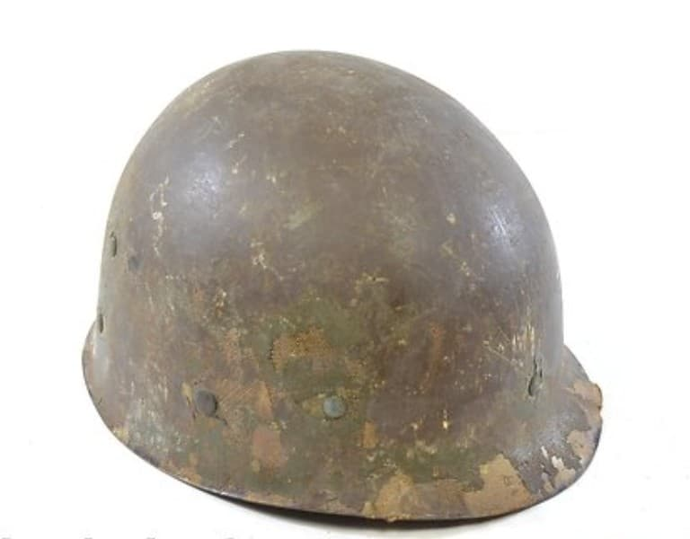
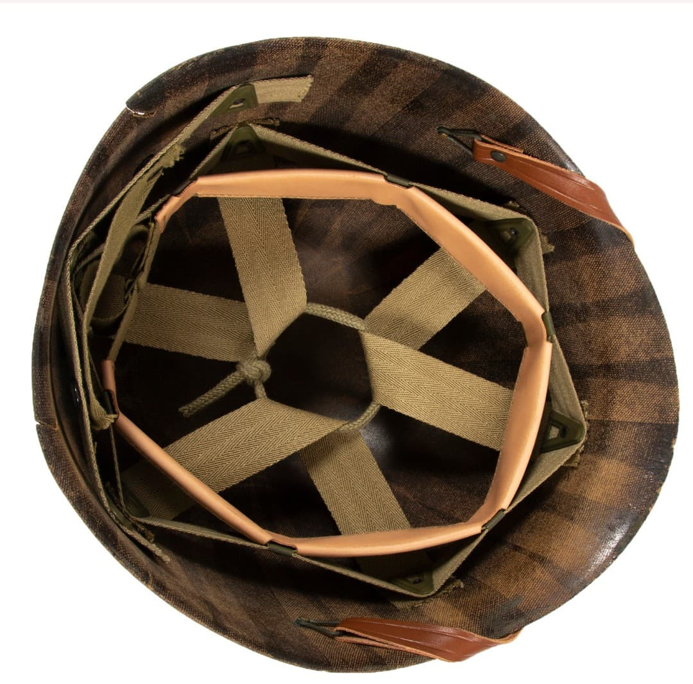

Le liner M1 est la coque intérieure du casque américain M1. Il assure le confort, le maintien et l’ajustement du casque sur la tête du soldat. Contrairement à la coque en acier, le liner est léger, respirant et peut être porté seul pour les tâches non-combattantes.
Élément essentiel de l’équipement du GI, il accompagne toutes les campagnes américaines de la Seconde Guerre mondiale.

Le liner M1 est fabriqué en fibre composite phénolique, un matériau obtenu par superposition de couches de toile imprégnées de résine. Ce procédé donne une coque légère mais extrêmement résistante, capable d’absorber les chocs et de supporter les fortes températures à l’intérieur d’un casque en acier.

Le liner est équipé d’une suspension interne réglable, composée de sangles en toile et d’un bandeau frontal. Ce système permet d’amortir les chocs et d’éviter le contact direct entre la tête du soldat et la coque en acier du casque M1. Une jugulaire légère complète l’ensemble.
Introduit en 1941, le liner M1 accompagne tous les soldats américains durant la Seconde Guerre mondiale. Il est produit par plusieurs fabricants, chacun avec des variations de couleur, de texture et de suspension. Le liner est souvent conservé même lorsque la coque extérieure est remplacée.